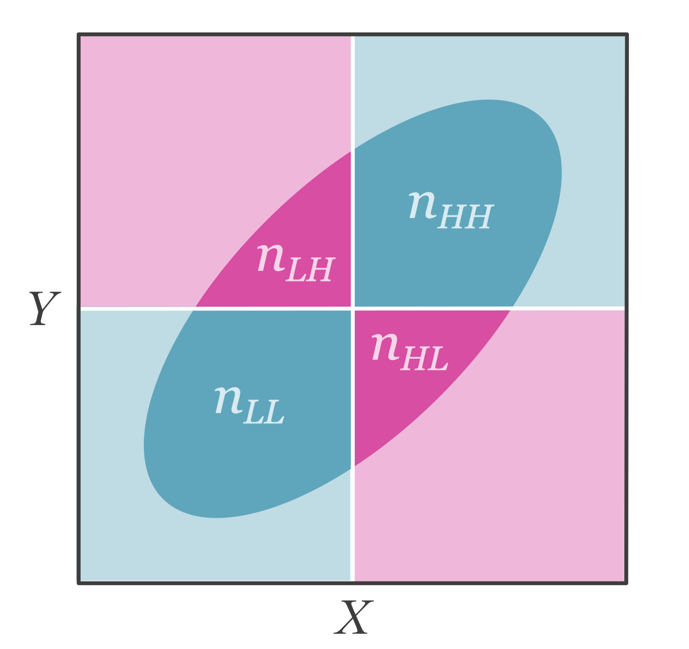

7 Artificial Dichotomization
7.1 Introduction
Researchers occasionally split naturally continuous variables into two discrete groups to increase interpretability or conduct specific analyses (e.g., t-tests). However, artificially dichotomizing variables introduces measurement error variance thus attenuating effect size estimates Maxwell and Delaney (1993). The obvious solution to this problem is to simply not dichotomize variables, however if only summary data is available to us, then we may not have this luxury. Dichotomization can also be practical in some instances. For example, clinical disorder diagnoses such as generalized anxiety disorder, are examples of dichotomization where individuals are separated into either having the disorder or not even though individual differences in anxiety exist as a continuum.
7.2 Artificial Dichotomization Induced Measurement Error
Variables that are dichotomized contain measurement error. This can be demonstrated by the simple fact that dichotomized scores are not perfectly correlated with their underlying continuous scores. To demonstrate this, we can draw a sample of scores and then split the data into high and low scorers and then calculate the correlation coefficient between the two (see Figure 7.1).
Even with a perfectly reliable measure, dichotomization will introduce measurement error. Dichotomization occurs when data is split into two groups (low and high groups will be denoted as \(L\) and \(H\), respectively) depending on whether they are above or below some cut-point \(C_X\). We can define artificially dichotomized scores as,
\[ X_D= \begin{cases} H,& \text{if } X\geq C_X\\ L,& \text{if } X<C_X \end{cases} \]
7.3 Correcting Correlations for Artificial Dichotomization
7.3.1 Defining the Target Quantity
We want to obtain the population correlation between continuous scores of the independent (\(X\)) and dependent variable (\(Y\)), \(\rho_{XY}\).
There are two cases of dichotomization that may occur in a given study: the univariate case where only one variable (either \(X\) or \(Y\)) is dichotomized and the bivariate case where both variables are dichotomized. In either case, dichotomization will have a biasing effect on the study correlation coefficient. The study correlation on dichotomized data (using the bivariate case, \(r_{X_D Y_D}\)) can be modeled as a function of the population correlation on continuous scores (\(\rho_{XY}\); i.e., the target), an artifact attenuation factor \(a\), and sampling error, \(e\),
\[ r_{X_DY_D} = a\rho_{XY}+e. \]
An unbiased estimate of \(\rho_{XY}\) can be calculated by dividing the study correlation by an estimate of the artifact attenuation factor, \(a\),
\[ r_{XY} = \frac{r_{X_D Y_D}}{a}. \]
7.3.2 Artifact Correction for Correlations
Correlations can suffer from dichotomization in one variable (univariate case) or both variables (bivariate case). This section will discuss the procedure for obtaining an unbiased estimate of the correlation coefficient for both cases. For a comparative visualization of a correlation on with no dichotomization, univariate dichotomization, and bivariate dichotomization, see Figure 7.2.

The Univariate Case
In the simplest case of dichotomization, only one variable is dichotomized and the other is left continuous. A Pearson correlation computed between a dichotomous variable and a continuous variable is known as point-biserial correlation. However, if the variable is naturally continuous, we can estimate the correlation of the underlying continuous scores by computing a biserial correlation. If all we have access to is the dichotomized data, then we need to assume the shape of the underlying distribution, in this case, the biserial correlation assumes normality.
In the population, the study correlation \(\rho_{X_D Y}\) is biased by some artifact biasing factor, \(a\),
\[ \rho_{X_D Y} = a\rho_{XY}. \]
To estimate the attenuation factor \(a\), we must first figure out where the split of the data occured. To do this, we must first calculate the proportion of the sample in the assigned to the low or high scoring group:
\[ p_X := p(X_i \geq C_X) = \frac{ n_{\text{H}} }{n_{\text{H}} + n_{\text{L}}} \]
or
\[ p_X := p(X_i < C_X) = \frac{ n_{\text{L}} }{n_{\text{H}} + n_{\text{L}}}. \]
Where \(n\) indicates the sample size within the low, \(L\), and high, \(H\), scoring groups.
We can use the quantile function (\(\phi^{-1}[\cdot]\), i.e., the inverse of the cumulative density of the standard normal distribution) to find where the split would have occured on a standard normal distribution, \(s_X=\phi^{-1}[p_X]\). Using the location of the split on the standard normal, we can compute the artifact attenuation factor [an adaptation of equation 2, Hunter and Schmidt (1990)],
\[ \hat{a} =\frac{\varphi\left(s_X\right)}{\sqrt{p_X(1-p_X)}}. \tag{7.1}\]
Where \(\varphi(\cdot)\) is the normal ordinate function (i.e., probability density function of a standard normal distribution). Figure 7.3 visually demonstrates how each of these relate to a standard normal distribution.

In the case of a median split, where the cut-point would be placed at zero of a standard normal (splitting the distribution in equal halves), the attenuation factor would simplify to \(\hat{a} =\frac{\varphi(0)}{\sqrt{.5(.5)}}\) \(=\frac{2}{\sqrt{2\pi}}\).
We can correct the study correlation using the estimated artifact factor, \(\hat{a}\), therefore the full correction equation is,
\[ r_{XY} = \frac{r_{X_DY}}{\hat{a}} = \frac{r_{X_DY}}{\left[\frac{\varphi\left(s_X\right)}{\sqrt{p_X(1-p_X)}}\right]}. \tag{7.2}\]
Hunter and Schmidt (1990) suggested that one should correct the standard error by dividing the uncorrected standard error by the artifact attenuation factor (see equation 6, Hunter and Schmidt 1990). However simulations have found that this computation does not work as well as Soper’s exact method (Soper 1914; Jacobs and Viechtbauer 2017). Therefore the standard error of the corrected (biserial) correlation can be estimated with the following formula (equation 12, Jacobs and Viechtbauer 2017),
\[ \small{se(r_{XY}) = \sqrt{\frac{1}{n-1} \left(r_{XY}^4+r_{XY}^2\left(\frac{p_X(1-p_X)s_X^2}{\varphi\left(s_X\right)^2} + \frac{2p_X - 1}{\varphi\left(s_X\right)} -\frac{5}{2}\right)+\frac{p_X(1-p_X)}{\varphi\left(s_X\right)^2}\right)}}. \]
Soper (1914) also developed an approximation of the above formula,
\[ se(r_{XY}) \approx \sqrt{\frac{1}{n-1}} \left(\frac{\sqrt{p_X(1-p_X)}}{\varphi\left(s_X\right)}-r_{XY}^2\right). \]
The Bivariate Case
In some cases, both independent and dependent variables are dichotomized. A Pearson correlation calculated on these two dichotomized (binary) variables would be equal to the phi coefficient (or also known as Matthew’s correlation coefficient) and we can denote it with our notation for dichotomized variables, \(\rho_{X_D X_D}\). Dichotomized data can be structured in a contingency table (see Table 7.1).
| \(X_D=\text{Low}\) | \(X_D=\text{High}\) | |
| \(Y_D=\text{Low}\) | \(n_{LL}\) | \(n_{HL}\) |
| \(Y_D=\text{High}\) | \(n_{LH}\) | \(n_{HH}\) |
Figure 7.4 illustrates how this contingency table relates to an underlying continuous bivariate normal distribution.

The corrected correlation coefficient for two dichotomized variables is commonly referred to as the tetrachoric correlation coefficient. The tetrachoric correlation estimates the correlation on continuous scores assuming a bivariate normal distribution.
One of the difficulties of computing a dichotomization corrected (tetrachoric) correlation (\(r_{XY}\)) is that the relationship between binary variables are reported in different ways across studies, we will describe how to obtain a dichtomization corrected correlation in four different cases:
- The full contingency table is provided, including the sample sizes for each cell.
- The odds ratio is reported as well as the marginal proportions (proportions in low and high groups for each variable).
- The Phi coefficient is reported.
Case 1: Full contingency table is reported
If the full contingency table is reported, then the tetrachoric correlation can be calculated directly. Due to the complexity of the calculation, we will use R.
The escalc() function in the metafor package (Viechtbauer 2010) can take on values from a contingency table and compute a tetrachoric correlation using the measure='RTET' argument. The function uses the method described by Kirk (1973).
# Example Contingency Table
# XL XH
# YL 43 23
# YH 27 38
library(metafor)
escalc(measure = 'RTET',
ai = 43,
bi = 23,
ci = 27,
di = 38,
var.names = c('rXY','se.2'))
rXY se.2
1 0.3637 0.0155 The results show a dichotomization corrected correlation of \(r_{XY} = .36\) and an estimated sampling variance of \(se_c^2=.016\).
Case 2: odds ratio is reported
If the odds ratio is all that is available, then we can use the tetrachoric correlation approximation described by Bonett and Price (2005). Using the estimated odds ratio (\(OR=(n_{HH}n_{LL})/(n_{HL}n_{LH})\)) and the marginal proportions (\(p_X\) and \(p_Y\); for this case, both proportions should be with respect to the high scoring group) we can approximate the dichotomization corrected (tetrachoric) correlation (see equation 4, Bonett and Price 2005),
\[ r_{XY} \approx \cos\left( \frac{\pi}{1+OR^\Omega}\right) \] Where \(\Omega\) is
\[ \Omega = 1 - \frac{\left|p_X -p_Y\right|}{5} - \left[\frac{1}{2}-\min(p_X,p_Y)\right]^2. \]
Note that \(\min(p_X,p_Y)\) is the smallest marginal proportion. The standard error of the estimated correlation can be computed with the following formula [see equation 9, Bonett and Price (2005); note this equation is slightly changed in order to account for the fact that we only have access to the marginal sample sizes and proportions]
\[ \small{se(r_{XY}) = \frac{\pi\times \Omega\times OR^\Omega\times\sin\left(\frac{\pi}{1+OR^\Omega}\right)}{\left(1+OR^\Omega\right)^2}\times\sqrt{\frac{4}{n}}} \]
Where \(n\) is the total sample size. Using base R, we can convert the odds ratio to a tetrachoric correlation.
pX <- .4 # proportion of individuals in high group in XD
pY <- .5 # proportion of individuals in high group in YD
n <- 150 # total sample size
OR <- 1.43 # odds ratio
omega <- 1 - abs(pX-pY) / 5 - (1/2 - min(c(pX,pY)))^2
# calculate corrected correlation
rXY <- cos(pi/(1+OR^omega))
# calculate standard error
se <- pi*omega*OR^omega*sin(pi/(1+OR^omega)) / (1+OR^omega)^2 * sqrt(4/n)
cbind(rXY, se) rXY se
[1,] 0.2665276 0.11637Case 3: Correlation between dichotomized variables
A Pearson correlation coefficient calculated between two binary variables is most commonly referred to as a Phi coefficient or Matthew’s correlation coefficient. However, the Phi coefficient underestimates the correlation on the underlying continuous scores (assuming bivariate normality). Therefore we can approximate the correlation on continuous scores by using a similar correction to the univariate case. We can define an artifact attenuation factor that is similar to Equation 7.1, but with the added attenuation of \(Y_D\),
\[ \hat{a} =\left[\frac{\varphi\left(\phi^{-1}[p_X]\right)}{\sqrt{p_X(1-p_X)}}\right]\times\left[\frac{\varphi\left(\phi^{-1}[p_Y]\right)}{\sqrt{p_Y(1-p_Y)}}\right]. \]
Therefore we can correct \(r_{X_DY_D}\) for dichotomization in both variables by dividing by the attenuation factor, \[ r_{XY} = \frac{r_{X_DY_D}}{\hat{a}}=\frac{r_{X_DY_D}}{\left[\frac{\varphi\left(\phi^{-1}[p_X]\right)}{\sqrt{p_X(1-p_X)}}\right]\times\left[\frac{\varphi\left(\phi^{-1}[p_Y]\right)}{\sqrt{p_Y(1-p_Y)}}\right]} \] This correction is only an approximation, however it performs fairly well when the correlation is below .8 (Hunter and Schmidt 1990). The standard error of the corrected correlation can be calculated similarly (adaptation of equation 9, Hunter and Schmidt 1990),
\[ se(r_{XY})=\frac{se(r_{X_DY_D})}{\left[\frac{\varphi\left(\phi^{-1}[p_X]\right)}{\sqrt{p_X(1-p_X)}}\right]\times\left[\frac{\varphi\left(\phi^{-1}[p_Y]\right)}{\sqrt{p_Y(1-p_Y)}}\right]} \]
Using the correct_r_dich() function in the psychmeta package (Dahlke and Wiernik 2019), we can correct the observed study correlation for dichotomization.
library(psychmeta)
correct_r_dich(r = .20, # observed study correlation
px = .50, # proportion of sample in high group of XD
py = .50, # proportion of sample in high group of YD
n = 100) # sample size r_corrected var_e_corrected n_adj
1 0.3141593 0.02296926 36.36678The output shows the corrected correlation to be \(r_{XY}=.31\) and it’s estimated sampling variance \(se_c^2=.023\).
7.4 Correcting Standardized Mean Differences for Artificial Dichotomization
7.4.1 Defining our Target Quantity
The target quantity is the standardized mean difference between groups of a naturally continuous variable. Our target can thus be defined as the population standardized mean difference between groups \(A\) and \(B\) on continuous scores of the dependent variable, \(\delta_{gY}\). For a given study the dichotomized standardized mean difference (\(d_{gY_D}\)) can be defined as
\[ d_{gY_D} = a\delta_{gY} + e \]
Therefore to obtain an unbiased estimate of the target quantity, we can correct the observed study standardized mean difference by dividing by the attenuation factor,
\[ d_{gY} = \frac{d_{gY_D}}{\hat{a}} \]
7.4.2 Artifact Correction for Standardized Mean Differences
The simplest way to correct for dichotomization in a standardized mean difference is to first convert the observed \(d\) value of the dichotomized dependent variable to a correlation coefficient. When converting to a correlation coefficient, it’s important to note the binary nature of both variables, leading us to estimate the phi coefficient rather than the point-biserial correlation that we would be estimating if the dependent variable was continuous. To calculate the phi coefficient from a \(d\) value we can use the proportion of group membership in group \(A\) or group \(B\) (\(p_g\); it does not matter which one is chosen, as long as it is consistent for every instance of \(p_g\)),
\[ r_{gY_D} = \frac{d_{gY_D}}{\sqrt{d_{gY_D}^2+\frac{1}{p(1-p)}}} \]
We can then correct the correlation similar to how we did in Section 7.3.2,
\[ r_{gY} = \frac{r_{gY_D}}{\left[\frac{\varphi\left(\phi^{-1}[p_Y]\right)}{\sqrt{p_Y(1-p_Y)}}\right]}. \]
Then we can convert the corrected correlation back into a standardized mean difference,
\[ d_{gY} = \frac{r_{gY}}{\sqrt{p_g\left(1-p_g\right)\left(1-r_{gY}^2\right)}}. \]
Where \(d_{gY}\) is our corrected correlation (i.e., the estimated correlation on continuous variables). The observed sampling variance must also be corrected using the same three step procedure. For simplicity, we will consolidate this into one formula,
\[ se(d_{gY}) = \frac {se(d_{gY_D}) \times r_{XY}} {r_{x_DY_D}\sqrt{\left(1+d_{gY_D}^2p_g[1-p_g]\right)^3(1-r_{gY}^2)^3}}. \]
Obtaining Standardized Mean Difference from Odds Ratio
In most cases, difference in dichotomized outcomes between two groups is unlikely to be reported as a standardized mean difference, instead it will be more commonly reported as an odds ratio (\(OR\)). The odds ratio is asymmetric about 1 (i.e., the null), but we can make it symmetric by log transforming it (\(\log(OR)\)). The standard error of the log odds ratio can be defined as,
\[ se(\log(OR)) = \sqrt{\frac{1}{n_{AH}} + \frac{1}{n_{AL}} + \frac{1}{n_{BH}} + \frac{1}{n_{BL}}} \]
The equation above requires the full contingency table to compute. From there we can use the cox-logit method to convert the odds ratio to a standardized mean difference (Cox 1989; Haddock, Rindskopf, and Shadish 1998). Them method is quite simple as it just divides the log odds ratio by 1.65,
\[ d_{gY} = \frac{\log(OR)}{1.65} \tag{7.3}\]
and the corresponding sampling variance of the \(d\) value is,
\[ se(d_{gY}) = \frac{se(\log(OR))}{1.65}. \]